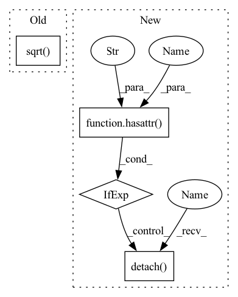

Pattern ID :36124

Before Change
num_heads = self.relative_position_bias_table.shape[0]
// pos_emb = tf.gather(self.relative_position_bias_table, self.relative_position_index, axis=1).numpy()
hh = ww = int(tf.math.sqrt(float(self.relative_position_bias_table.shape[1] - self.cls_token_pos_len)))
pos_emb = tf.reshape(self.relative_position_bias_table[:, : hh * ww], (num_heads, hh, ww)).numpy()
cols = int(tf.math.ceil(num_heads / rows))
fig, axes = plt.subplots(rows, cols, figsize=(base_size * cols, base_size * rows))
After Change
// pos_emb = tf.gather(self.relative_position_bias_table, self.relative_position_index, axis=1).numpy()
hh = ww = int(float(self.relative_position_bias_table.shape[1] - self.cls_token_pos_len) ** 0.5)
pos_emb = self.relative_position_bias_table[:, : hh * ww]
pos_emb = pos_emb.detach().numpy() if hasattr(pos_emb, "detach") else pos_emb.numpy()
pos_emb = pos_emb.reshape((num_heads, hh, ww))
cols = int(math.ceil(num_heads / rows))
fig, axes = plt.subplots(rows, cols, figsize=(base_size * cols, base_size * rows))
In pattern: SUPERPATTERN
Frequency: 3
Non-data size: 4
Instances
Fragment ID: 102477531
Project Name: leondgarse/keras_cv_attention_models
Commit Name: 1aa29dc686f862bc1ff66a11700fa8ef16bd2b8a
Time: 2023-02-03
Author: leondgarse@gmail.com
File Name: keras_cv_attention_models/beit/beit.py
M Class Name: MultiHeadRelativePositionalEmbedding
N Class Name: MultiHeadRelativePositionalEmbedding
M Method Name: show_pos_emb(3)
N Method Name: show_pos_emb(3)
M Parent Class: layers.Layer
N Parent Class: keras.layers.Layer
M File Name: keras_cv_attention_models/beit/beit.py
N File Name: keras_cv_attention_models/beit/beit.py
M Start Line: 128
M End Line: 130
N Start Line: 132
N End Line: 136
'>
Before Change
else:
source_tt = source_layer.bb // layer
num_heads = source_tt.shape[0]
source_query_hh = source_query_ww = int(tf.math.sqrt(float(source_tt.shape[1]))) // assume source weights are all square shape
source_kv_hh = source_kv_ww = int(tf.math.sqrt(float(source_tt.shape[2]))) // assume source weights are all square shape
tt = tf.reshape(source_tt, [num_heads, source_query_hh, source_query_ww, source_kv_hh * source_kv_ww]) // resize on query dimension first
After Change
// source_tt = source_layer["pos_emb:0"] // weights
else:
source_tt = source_layer.bb // layer
source_tt = np.array(source_tt.detach() if hasattr(source_tt, "detach") else source_tt)
num_heads = source_tt.shape[0]
source_query_hh = source_query_ww = int(float(source_tt.shape[1]) ** 0.5) // assume source weights are all square shape
'>
Fragment ID: 102477534
Project Name: leondgarse/keras_cv_attention_models
Commit Name: 2ba27b0132168f3590dd4b3bead9edc15a70ba7d
Time: 2023-02-11
Author: leondgarse@gmail.com
File Name: keras_cv_attention_models/cmt/cmt.py
M Class Name: BiasPositionalEmbedding
N Class Name: BiasPositionalEmbedding
M Method Name: load_resized_weights(3)
N Method Name: load_resized_weights(3)
M Parent Class: layers.Layer
N Parent Class: keras.layers.Layer
M File Name: keras_cv_attention_models/cmt/cmt.py
N File Name: keras_cv_attention_models/cmt/cmt.py
M Start Line: 59
M End Line: 74
N Start Line: 61
N End Line: 79
'>
Before Change
source_bb = source_layer["positional_embedding:0"] // weights
else:
source_bb = source_layer.bb // layer
hh = ww = int(tf.math.sqrt(float(source_bb.shape[0])))
ss = tf.reshape(source_bb, (hh, ww, source_bb.shape[-1])) // [hh, ww, num_heads]
// target_hh = target_ww = int(tf.math.sqrt(float(self.bb.shape[0])))
tt = tf.image.resize(ss, [self.k_blocks_h, self.k_blocks_w], method=method) // [target_hh, target_ww, num_heads]
After Change
source_bb = list(source_layer.values())[0] // weights
else:
source_bb = source_layer.bb // layer
source_tt = np.array(source_tt.detach() if hasattr(source_tt, "detach") else source_tt)
hh = ww = int(float(source_bb.shape[0]) ** 0.5)
ss = source_bb.reshape((hh, ww, source_bb.shape[-1])) // [hh, ww, num_heads]
// target_hh = target_ww = int(float(self.bb.shape[0]) ** 0.5)
'>
Fragment ID: 102477532
Project Name: leondgarse/keras_cv_attention_models
Commit Name: c870bf2e8d3e6b8b0e969d5468d550085414c0cd
Time: 2023-02-05
Author: leondgarse@gmail.com
File Name: keras_cv_attention_models/levit/levit.py
M Class Name: MultiHeadPositionalEmbedding
N Class Name: MultiHeadPositionalEmbedding
M Method Name: load_resized_weights(3)
N Method Name: load_resized_weights(3)
M Parent Class: layers.Layer
N Parent Class: keras.layers.Layer
M File Name: keras_cv_attention_models/levit/levit.py
N File Name: keras_cv_attention_models/levit/levit.py
M Start Line: 66
M End Line: 74
N Start Line: 73
N End Line: 82